Preparation
Configure Dev Environment
We will be using Visual Studio Code (VScode) as our IDE for Ansible development, we will connect VScode to a (Linux) development host.
I never worked with VSCode ! What do I need to know?
VSCode ist a really powerfull and customizable IDE. Nearly everything you need to work with Textfiles is there or can be added as a Plugin.
These Plugins are the main point for many people to choose VSCode. (wait a moment, isn't that extendability also a reason people use Ansible?)
The unchanged look and feel of VSCode after the first start
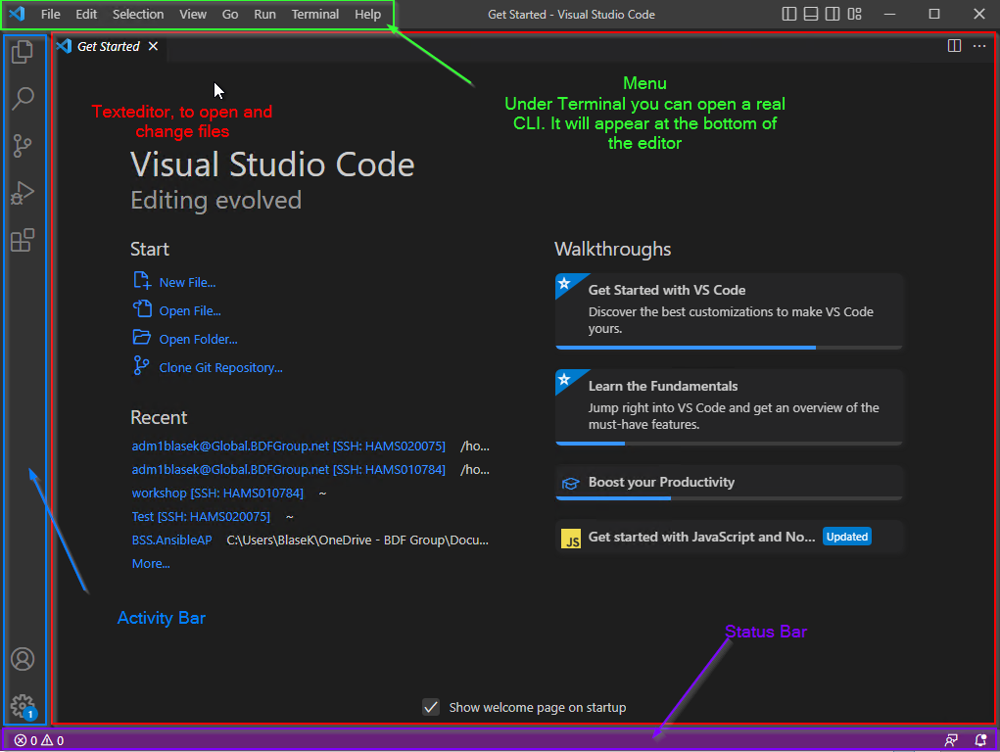
In the Editor Area there is a Walktroughs Section. It is highly advised to take a look at the Guides there even as a long time User you may be surprised by some features or shortcuts.
In the Activity Bar there are alot of important things present that you will need on a regular basis. From top to bottom:
+ File Explorer
* Expands to a file explorer where you can see the folder structure.
Maybe you need to select a folder first
+ Search/Replace
* Search and replace in your working directory accross all files
+ Git / Source Control
* Use versioncontrol to commit your change, switch branches
and push/pull to a remote destination
+ Run / Debug
* not really needed for ansible
+ Extensions
* All the Extension in a single place ready to search/download/install/uninstall
+ User Account
* Your User Account
+ VSCode Settings
* All Settings, preferences, themes, commands and a lot more to explore
This is small overview for the vanilla VSCode experience. We will add more functionality in the preparation phase.
Add the Remote Explorer extension as your first Plugin.
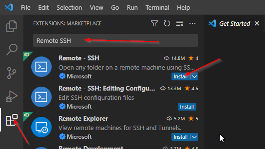
I never worked with VSCode ! What changed?
Please wait a moment for it to finish. Afterwards there will be a new Icon in your Activity Bar it appears right under the Extensions Icon. The Status Bar also changed a bit in the left corner. There is a file opening in the Editor Pane with detailed Informations and Settings for the plugin you just installed. Sometimes it even shows a small demo.
VScode has now a Remote Explorer icon in the Activity Bar, click on it, we will add a new SSH connection. Click on Open SSH config file, the icon. Use the personal .ssh\config file, the first entry in the list.
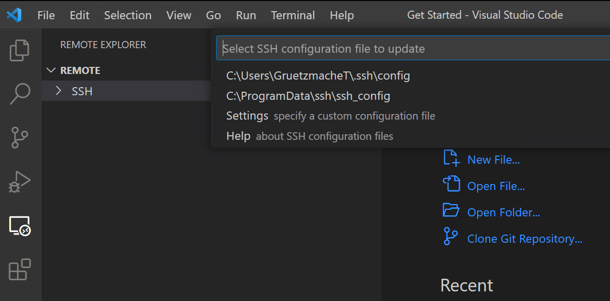
Input the following configuration and save the file (use Ctrl+S or File and Save) afterwards.
Note
You trainer will provide you with the exact values for HostName and User!
After saving, if the new SSH target does not show up, click the Refresh button when hovering above the Remote tab.
Do a right-click on the SSH target Ansible-Dev-Node and choose Connect in current window.... You will be asked two questions, what kind of platform the target node is (choose Linux), afterwards input your password. On the first connection you need to enter your password multiple times.
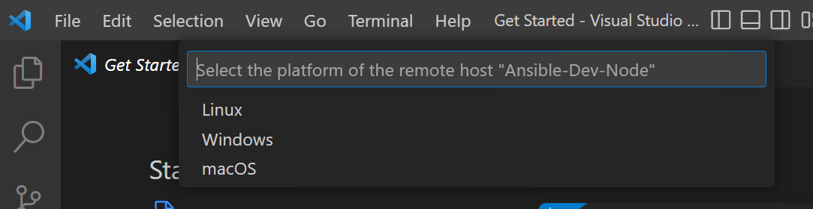
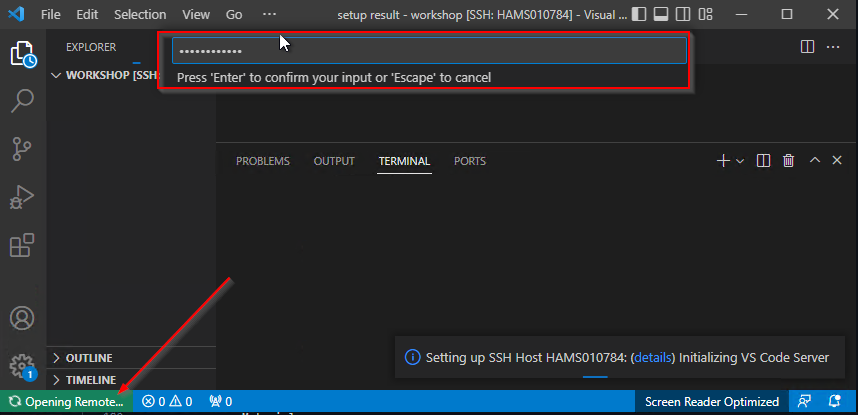
Give it some time for installing the VScode plugin (in ~/.vscode-server), a successful connection is established once a green SSH: Ansible-Dev-Node box is shown in the VScode footer. If you open a Terminal now, you will be on the remote host and have a remote shell and linux functionality.
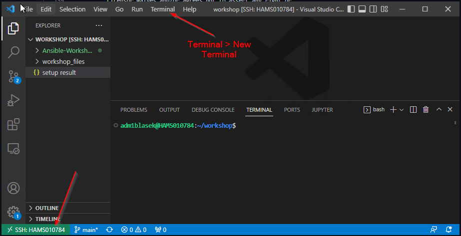
Install Ansible & dependencies
You need to install Ansible (and a couple of Python dependencies) yourself. Copy (the code block has a copy button on the right) and paste (right-click in the terminal window) the command in your terminal and hit Enter.
What is installed here?
ansible-core- the Ansible binaries and a subset of available modulesansible-lint- a Best-Practice checker for Ansible (not used or discussed in detail today, is a dependency for the Ansible VScode extension)pywinrmandpywinrm[kerberos]- Python libraries for Windows Remote Management
The Ansible binary (and other dependencies) were installed in your home directory and is (not yet) usable. We need to adjust the PATH. The following command adds a line to the end of your (personal) .bashrc file. Copy and paste the command in your terminal and hit Enter.
Afterwards, source the file for the changes to take effect:
Useful VScode Extension
Tip
This is an optional step, it may help with the first steps and is useful for further development with Ansible.
Visual Studio Code has a huge Marketplace with loads of useful Plugins or feature extension, one of which is especially useful for Ansible Development and is directly from RedHat and itself is developed with all code open source.
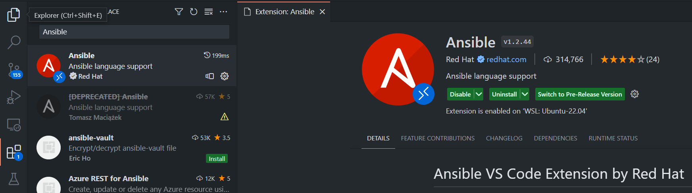
Go to Extensions and search for redhat.ansible. Use the extension from Red Hat, this one is activly maintained. In the extension description, click the Install button.
What do I need this extension for and what changed?
This extension adds some cool features to VSCode that are purely ansible specific and need ansible and ansible-lint on your remote host to work.
If VSCode identifies your file as an "Ansible" file it will change its behaviour. You can check this on the right side of your Status Bar at the bottom. .yml and .yaml files should be identified as YAML Language. Which is correct but we want to change that behaviour to be even "more" correct.
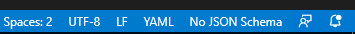
Click on YAML in the Status Bar. VSCode opens a dialog at the top. Select Configure File Association for '.yml'. Then select Ansible.
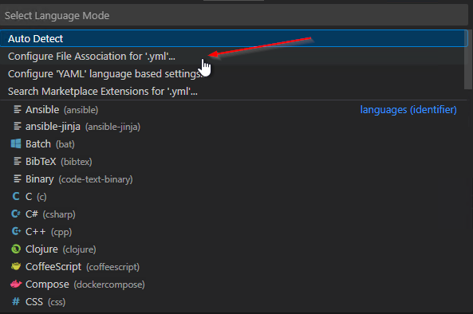 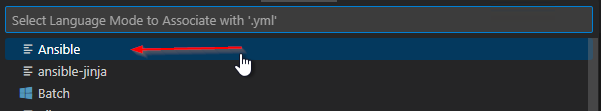
The language in the Status Bar should now look like this:
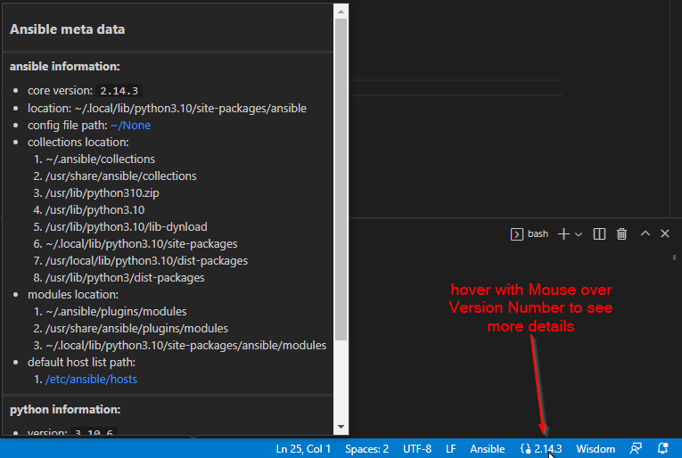
For more information read the official instructions, please
Configure Azure DevOps and Git
In Azure DevOps code is stored in repositories. These repositories on the other hand are kept in a project. Every project can have multiple repositories.
Login to Azure DevOps and choose the Project in which you want to create your Repository. Every project, by default, already has one repository, we will create an additional one for our personal workshop content.
In the top, open the drop-down menu and choose New repository.
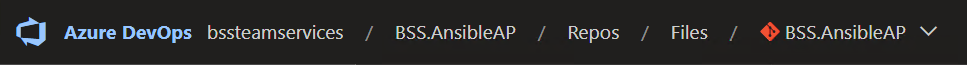
On the right of your browser window, enter a name Ansible-Workshop-usernamefor your repository, replace username with your username abbreviation. Leave all other configuration as-is.
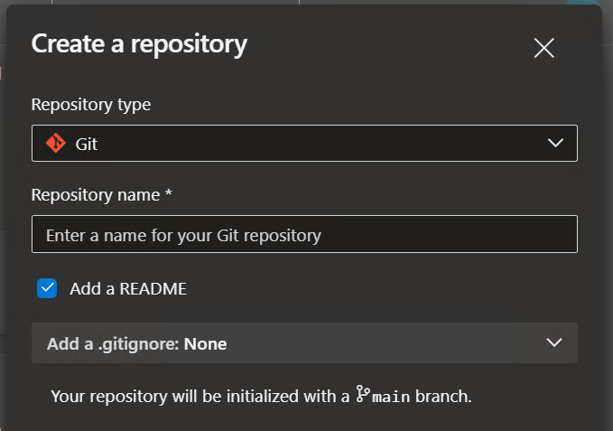
Once your repository (the place where your code (read: Ansible content) will be stored) is created, click the Clone button on the right.
Now, click the button Generate Git credentials:
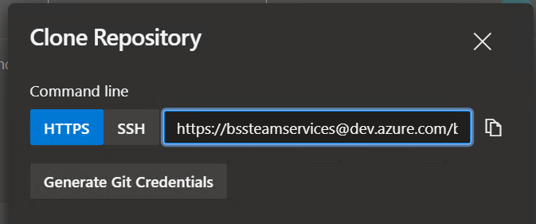
Tip
Store the password (access token) now, you won't be able to retrieve it again! Also, make note of your username, we need it a bit later on.
All right, almost done!
Now, let's clone the repository in your home directory on the Ansible Development node.
Click on the Clone button again and copy (by clicking Copy clone URL to clipboard) the HTTPS URL.
In the terminal of the dev node, paste the content with a right-click after typing git clone:
Change into the directory (with cd).
To work and interact with Git, we will need to configure it slightly. Run the following commands:
Warning
These are only examples, use your real Name and E-Mail address!
This is used to identify, who made the code changes, which is fundamental for collaborative work on your Ansible playbooks.
Login to AAP
There are a number of constructs in the Automation Controller UI that enable multi-tenancy, notifications, scheduling, etc. However, we are only going to focus on a few of the key constructs that are required for this workshop today.
- Credentials
- Projects
- Inventory
- Job Template
Your Automation Controller instance url and credentials were supplied to you by the trainer.
Use the SAML login option, you may need to open the icognito browser, if you need to access with a different user for single-sign on.
Create SCM Credential
Credentials are utilized by Controller for authentication when launching jobs against machines, synchronizing with inventory sources, and importing project content from a version control system.
There are many types of credentials including machine, network, and various cloud providers. For this workshop, we are using machine and source control credentials.
Select CREDENTIALS from the left hand panel under resources.
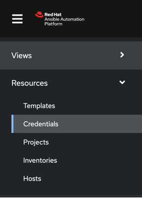
We need to access our source code repository, where our automation projects will live.
Click the  icon and add a new credential.
icon and add a new credential.
Complete the form using the following entries, replace username with your username abbreviation:
| Key | Value | |
|---|---|---|
| Name | Azure DevOps username | |
| Description | SCM credential for username | |
| Organization | Choose your organization | |
| Credential Type | Source Control | |
| Username | Your name from Azure DevOps | Username as shown in the Clone button in Azure DevOps |
| Password | Your password | The password you retrieved when creating the Git credentials |
Select SAVE 
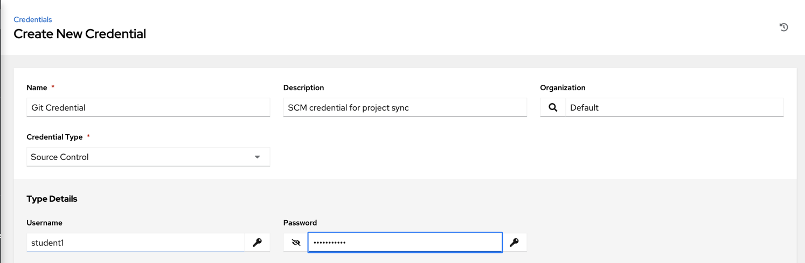
Create Machine Credential
We need to access our Windows Test machines over WinRM, let's create a machine credential for that.
Click the icon and add another new credential.
Complete the form using the following entries, again, replace username with your username abbreviation:
| Key | Value | Notes |
|---|---|---|
| Name | Windows Test Host username | |
| Organization | Default | |
| Type | Machine | |
| Username | Login name | Ask your trainer for assistance! |
| Password | password |
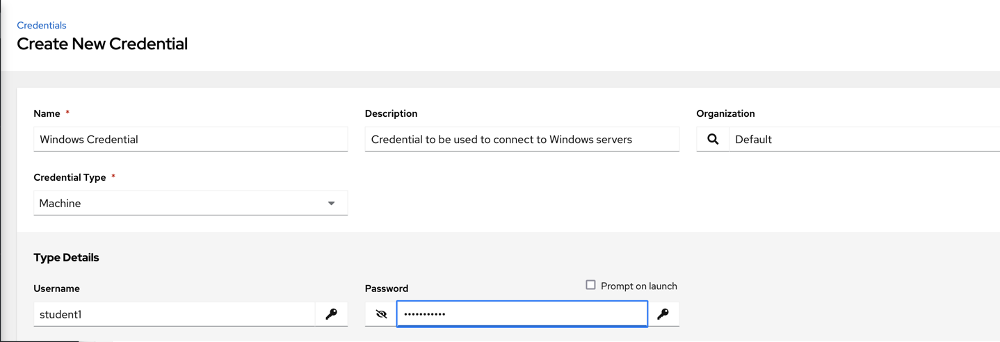
Select SAVE
Perfect, all done for now, you are prepared for all further exercises!